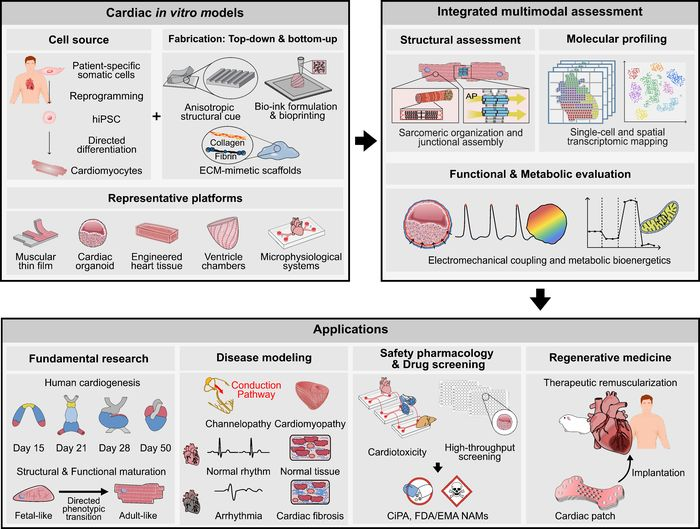

Advanced in vitro cardiac models for drug evaluation: Integration of organoids, engineered tissues, and microphysiological systems
A comprehensive review of advanced human cardiac in vitro models—spanning cardiac organoids, engineered tissues, and microphysiological systems—with emphasis on structural, functional, molecular, and multimodal assessment for preclinical drug evaluation.
My role: First-author manuscript development, literature synthesis, conceptual organization, and scientific figure design.